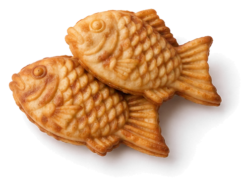
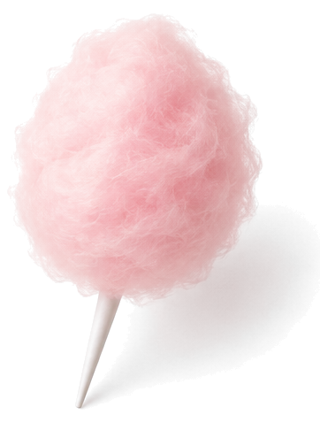
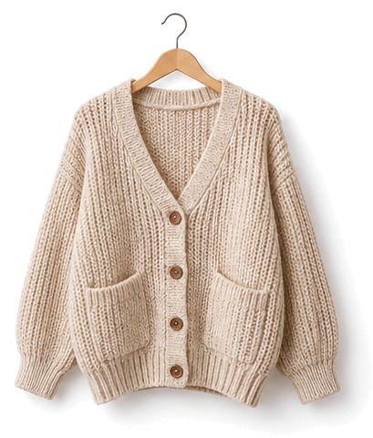
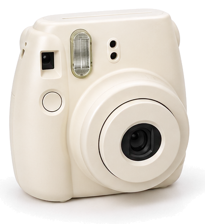
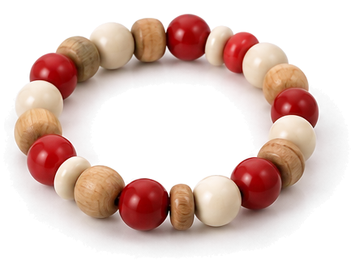

등촌교회 2청년회 새생명축제
등촌 GIVE LOVE

새생명축제
2026.11.15주일
오후 2:30 · 등촌교회 본당
♥맛보기 플리마켓 11.07 토 낮 12시
New Life Festival
초대합니다
GIVE LOVE
2026.11.15 SUN 2:30 PM
맛보기 플리마켓 11.07 SAT 12:00
Invitation초대합니다
찬 바람이 불기 시작하는 11월,
등촌교회 2청년회가
여러분을 새생명축제에 초대합니다.
새생명축제는 처음 오는 이웃을
반갑게 맞는 등촌교회의 잔치예요.
무언극과 난타 공연을 준비하며
설레는 마음으로 기다리고 있어요.
새생명축제11.15 주일 오후 2:30 · 등촌교회 본당
축제가 더 기다려지도록
일주일 앞서 작은 장터도 열어요.
떡볶이 한 접시 나누며
먼저 얼굴을 익혀요.
맛보기 플리마켓11.07 토 낮 12시–오후 4시 · 교육관 1층
교회가 처음이어도,
오랜만이어도 괜찮아요.
동네 이웃 누구나,
부담 없이 놀러 오세요.
등촌교회 2청년회 드림
새생명축제부터 하나씩 소개할게요계속 내려 보세요
New Life Festival새생명축제
새생명축제는 등촌교회가 해마다 11월에 여는 전도 축제예요. 교회 문턱을 낮추고 처음 오는 이웃을 반갑게 맞는 날이에요. 올해 2청년회는 11월 15일 주일 오후 2시 30분, 정성껏 준비한 무대로 여러분을 기다려요.
11월 15일 주일
오후2:30
등촌교회 본당
축제에서 만나요
- 01
무언극
말 없이 몸짓으로 전하는 이야기

- 02
난타
힘차게 두드리는 리듬 공연

- 03
웰컴키트
처음 온 분께 드리는 작은 선물

2청년회는 27세 이상 미혼 청년들이 함께 예배하고 교제하는 공동체예요. 매주 주일 오후 2시 30분, 본당에서 예배해요. 축제에서 만난 인연, 다음 주일에도 이어 가요.
Date11월,
두 번 만나요
새생명축제 일주일 전, 맛보기 플리마켓이 먼저 열려요. 두 날 모두 캘린더에 담아 두세요.
새생명축제까지
2026년 11월 15일 주일 오후 2시 30분
맛보기 플리마켓 D-28 11월 7일 토요일 낮 12시
11November 2026
- ♥7일 토요일맛보기 플리마켓
- 15일 주일새생명축제
Flea Market축제 전에,
맛보기 장터
새생명축제를 일주일 앞둔 토요일, 누구나 편하게 들를 수 있는 작은 장터가 먼저 열려요.
- 언제
- 11월 7일 토요일 낮 12시–오후 4시
- 어디서
- 등촌교회 교육관 1층 실내 로비와 야외 주차장먹거리는 야외 주차장에서 바로 만들어요.
- 안내
- 본부와 환전소가 있어요.궁금한 건 언제든 물어보세요.
먹고·사고·만들고·놀고
먹거리, 마켓, 체험 부스가 기다려요.

1 / 3
먹거리
떡볶이 · 어묵 · 붕어빵 · 솜사탕 · 음료




2 / 3
마켓
기부 물품 · 옷 · 말랑이 · 말씀 카드와 꽃


3 / 3
체험
사진 · 풍선아트 · 키링 · 팔찌 만들기



Give나눌수록
쌓여요
떡볶이 한 접시, 헌책 한 권을 살 때마다 나눔이 한 칸씩 쌓여요.
판매 수익금은 전액
기아대책과 자립청소년 지원에
기부합니다.
Welcome처음 오신 분께
드려요
맛보기 플리마켓 날, 주차장 입구 웰컴 데스크에 들러 주세요.
- Free drink무료 음료음료 한 잔을 드려요11.07GIVE LOVE
- Class체험 쿠폰체험 부스에서 쓸 수 있어요11.07GIVE LOVE
- Lucky draw럭키드로우 응모권추첨에 응모할 수 있어요11.07GIVE LOVE
Preview종이 인형들은
벌써 와 있어요
11월 7일, 이번엔 당신 차례예요.
Location오시는 길
등촌교회
- 새생명축제본당11월 15일 주일 오후 2:30
- 맛보기 플리마켓교육관 1층 로비 · 야외 주차장11월 7일 토요일 12:00–16:00
서울 양천구 목동중앙북로8길 49
플리마켓 날 비가 오면 교육관 실내 로비와 소강당에서 열려요.
당신이 오면완성돼요
11월 7일 맛보기 플리마켓에서,
11월 15일 새생명축제에서 기다릴게요.